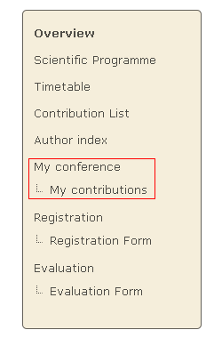
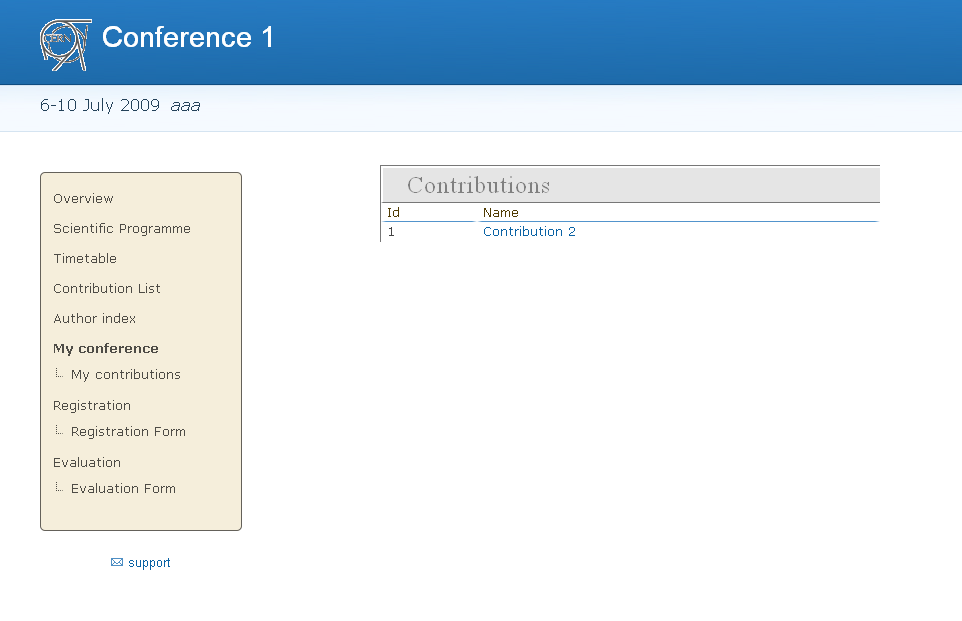
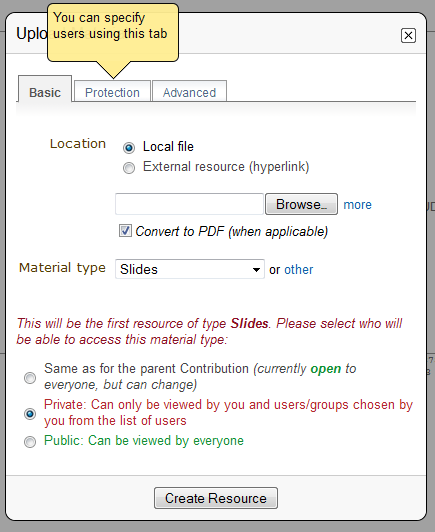

1. Submitter’s Guide¶
1.1. Submitter¶
The Submitter is able to submit material for a contribution. You are given Submitter access by either the Conference Manager, Session Manager, Contribution Manager or possibly the Session Co-ordinator.

You can access the contributions for which you can submit material by selecting My contributions from the menu in the event homepage. This will take you to your submission area and will list the contributions for which you can submit material.

1.2. Submitting¶
Once in the My contributions area you can click on the contribution name to view the contribution details and start submitting material.

1.2.1. Submitting Material¶
Once you have clicked on ‘Add Material’ you are presented with a screen to let you submit.

You can choose of which material type you want to submit, upload a file, and enter a description or comment.
When the material has been submitted it will appear in the contribution details